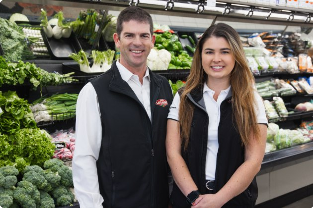

Quatre générations, une communauté
Une histoire de famille.
Depuis 1959, la famille Laflamme fait vivre un marché de quartier au cœur d’Aylmer.

Les étapes de notre histoire.
- 1959
Henri Laflamme
Ouverture du IGA Laflamme dans le nouveau centre commercial.
- 1977–1992
Jean-Paul et Jean-Pierre
Les fils d’Henri assurent la gestion de l’épicerie.
- 1993
Marius Laflamme
Marius devient propriétaire; l’épicerie prend le nom de Marché Laflamme.
- 2023
Myriam Laflamme
Myriam devient copropriétaire avec son père : une quatrième génération au service d’Aylmer.